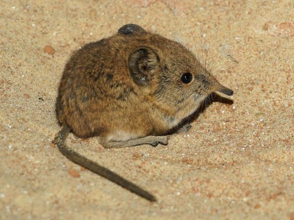

|
Este pequeño mamífero presenta un hocico largo y puntiagudo, ojos diminutos y orejas apenas visibles. Su pelaje es de color gris-plateado y posee una cola corta. Una característica sorprendente es el fenómeno de Dehnel: su cráneo se encoge en invierno y vuelve a crecer en primavera, lo que le permite ahorrar energía durante los meses fríos .
menu principal
|

 MUSARAÑA DE OREJAS PEQUEÑAS
MUSARAÑA DE OREJAS PEQUEÑAS